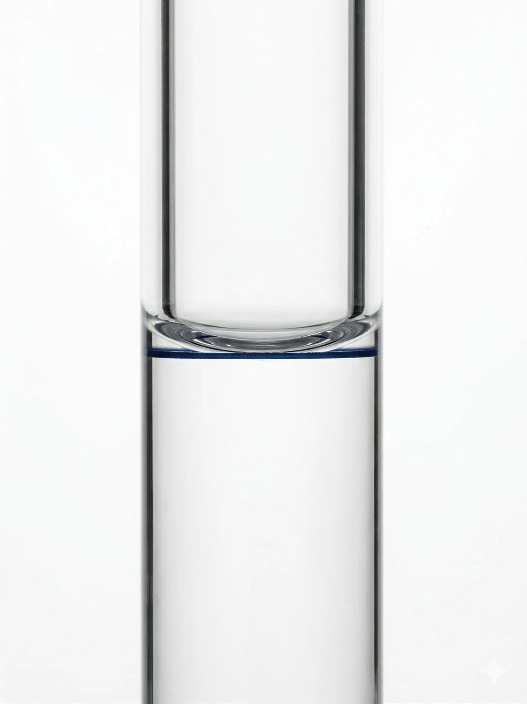

Per què importa mesurar bé un volum?
En aquestes pràctiques fareu servir molts materials per treballar amb líquids: buretes, pipetes, matrassos aforats, provetes i vasos de precipitats. Tots tenen una funció útil, però no tots serveixen per al mateix tipus de mesura.
La clau és saber quin material toca en cada situació i amb quina precisió podeu reportar el volum. Si el volum entra als càlculs, cal material i lectura adequats; si és un volum auxiliar, el criteri és diferent. Vegem-ho de manera ordenada.
La jerarquia de precisió
Jerarquia orientativa del material volumètric que fareu servir (de més a menys precisió):
No tot el que mesureu ha de ser ultraexacte. Sovint necessitareu afegir dissolvent per diluir o preparar el medi (aigua desionitzada, medi no aquós, tampó o un altre dissolvent adequat) — volums que no apareixen als càlculs. Per a això teniu la proveta i el vas de precipitats: són ràpids, pràctics i suficients quan el volum exacte no importa.
Material volumètric de precisió
Com funciona el material de precisió?
Pipetes aforades, buretes i matrassos aforats tenen marques calibrades gravades al vidre. El fabricant ha calibrat cada peça individualment: el volum que indica la marca és exacte, sempre que el llegiu correctament.
Com saber si necessiteu material de precisió?
Feu-vos aquesta pregunta: aquest volum apareixerà als càlculs finals o condicionarà el resultat?
Aquesta és una regla útil per començar, però la selecció final del material sempre s'ha de fer amb criteri analític (objectiu de l'assaig, tolerància d'error i impacte del volum en el resultat).
Ara, material per material
Un cop triat el material correcte, vegem com s'utilitza bé en cada cas.
El matràs aforat
Què és?
Un matràs amb forma de pera i coll llarg i estret, amb una marca d'aforament al coll. Serveix per preparar un volum exacte de dissolució — per exemple, dissoldre una substància en exactament 100,0 mL.
Lectura al matràs aforat (ajust al traç d'aforament)
El volum correcte s'obté quan la part inferior del menisc és tangent a la línia d'aforament, amb els ulls al mateix nivell de la marca.
Ajusteu les últimes gotes amb comptagotes per no sobrepassar la línia.

Acondicionar el matràs aforat
Abans d'usar-lo, esbandiu el matràs amb petites porcions del dissolvent de treball i descarteu-les. En el matràs aforat, aquest pas no té excepció.
Transferència quantitativa
Dissoleu la substància en un vas amb una petita porció de dissolvent adequat. Després, transferiu-ho al matràs aforat i esbandiu el vas 3 vegades amb petites porcions del mateix dissolvent, abocant cada esbandida al matràs.
Ajustar al traç d'aforament
Afegiu dissolvent adequat fins que el menisc sigui tangent a la marca. El coll estret fa que petites variacions de volum produeixin canvis grans en el nivell.
Homogeneïtzar
Tapeu el matràs i invertiu-lo diverses vegades per barrejar bé. La concentració ha de ser uniforme a tot el volum.
Mai escalfeu un matràs aforat!
El matràs aforat està calibrat a una temperatura determinada (normalment 20 °C). Si l'escalfeu, el vidre es dilata i el volum canvia. Si necessiteu dissoldre amb calor, feu-ho en un vas de precipitats amb el dissolvent adequat i després transferiu al matràs aforat un cop fred.
La pipeta aforada
Què és?
Un tub de vidre amb una sola marca (l'aforament). Mesura un únic volum exacte — per exemple, exactament 20,00 mL.
Serveix per transferir una alíquota exacta de mostra o reactiu d'un recipient a un altre quan aquest volum entra als càlculs.
Acondicionar la pipeta aforada
Esbandiu-la amb petites porcions de la dissolució que pipetejareu i descarteu-les. A la pipeta aforada, aquest pas no té excepció.
Omplir amb pi-pump
Mai aspireu amb la boca. Feu servir el pi-pump només per omplir fins una mica per sobre de la marca.
Ajustar amb el dit
Per a l'ajust fi i la descàrrega, controleu el flux amb el dit que us doni més estabilitat a la part superior de la pipeta: es recomana el dit índex, però també es pot fer amb el polze. No feu la dosificació fina amb el pi-pump.
Ajusteu fins que la part inferior del menisc sigui tangent a la marca d'aforament.
Transferir correctament
Deixeu caure el líquid per gravetat i toqueu la punta de la pipeta a la paret del recipient receptor. Espereu uns segons fins que deixi de rajar.
Mai bufeu l'última gota!
Veureu que queda una petita gota a la punta de la pipeta. No la bufeu. La pipeta ha estat calibrada comptant amb aquesta gota.
La bureta
Què és?
Un tub de vidre graduat amb una clau de pas a la part inferior. Permet afegir volums variables amb molta precisió. El 0 és a dalt i els números creixen cap avall — perquè mesura el volum que ha sortit.
Lectura de la bureta (menisc)
La lectura es fa a la part inferior del menisc, amb els ulls a l'alçada de la marca. Si el menisc és a 20,7, s'anota 20,70 mL.
La bureta té divisions de 0,1 mL, per tant cal estimar el segon decimal: per exemple, entre 20,7 i 20,8 s'anota 20,75 mL.

Compte amb l'error de paral·laxi
Si no col·loqueu els ulls exactament a l'alçada de la marca, veureu el menisc en una posició aparent que no és la real.
En la pràctica, és senzill d'evitar:
Acondicionar
Abans d'omplir, esbandiu la bureta 3 vegades amb petites porcions de la dissolució que fareu servir. Això evita que el dissolvent residual de rentat alteri la concentració efectiva.
Excepció pràctica: si la bureta ja està preparada amb el mateix valorant d'una valoració immediatament anterior, es pot considerar acondicionada per estalviar valorant, sempre amb criteri del professorat.
Omplir i eliminar bombolles
Ompliu per dalt. Després, obriu la clau ràpidament per expulsar qualsevol bombolla d'aire de la punta. Les bombolles causen errors: quan es mouen, el volum canvia sense que hàgiu afegit res al matràs.
Llegir amb 2 decimals
La bureta de 25 mL té divisions cada 0,1 mL. Heu d'estimar el segon decimal (entre dues línies). Per exemple: si el menisc cau entre 12,3 i 12,4, estimeu 12,35.
Anoteu sempre volum inicial i volum final. El volum gastat és la diferència.
La lectura és per diferència
Igual que amb la balança, anoteu el volum d'inici (V₁) i el de final (V₂). El volum gastat és V₂ − V₁. No cal que comenceu a 0,00 mL.
Reompliu la bureta abans de cada valoració
Cada erlenmeyer es valora amb la bureta acabada d'omplir. El volum gastat ha de ser d'uns 15–20 mL (dels 25 de la bureta) per minimitzar l'error relatiu. No valoreu dos erlenmeyers seguits sense reomplir.
La pipeta graduada
No confongueu amb l'aforada!
La pipeta graduada té moltes marques (com una bureta petita). Serveix per mesurar volums variables — per exemple, 3,5 mL d'un reactiu. És menys precisa que l'aforada, però més versàtil. S'utilitza per afegir reactius (indicador, àcid, base) quan el volum no necessita ser extremadament exacte.
Errors freqüents
Ara que coneixeu el material, vegem dos errors que es veuen sovint.
Mesurar amb un vas de precipitats
Les marques del vas de precipitats són orientatives — l'error pot ser del 10% o més. Si hi poseu "20 mL", podrien ser 18 o 22 mL. El vas serveix per contenir, mesclar i escalfar, no per mesurar.

Usar la proveta per a un volum que va al càlcul
La proveta té divisions més fines que el vas (error d'±1 mL), però no és material de precisió. Serveix per afegir dissolvent o un reactiu en excés — mai per mesurar un volum que apareixerà en una fórmula.